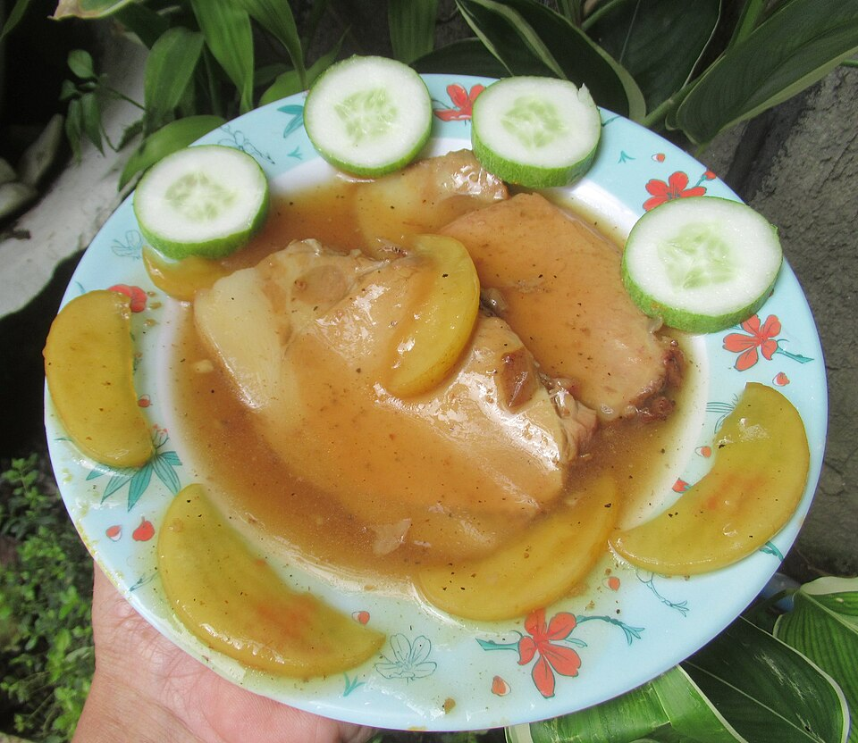

Carnes · Suínos
Lombo à fantasia com purê de maçã

Ingredientes do lombo
- 1 lombo de 1,300 kg já limpo
- Sal, pimenta-do-reino e suco de limão
- 3 cebolas cortadas em 4
- 1 garrafa de vinho branco seco
- 1 colher (sopa) de manteiga
Modo de preparo do lombo
- Tempere o lombo com sal, pimenta e suco de limão. Deixe tomar gosto por 1 hora.
- Coloque-o em uma assadeira, contorne com a cebola em pedaços e espalhe a manteiga por cima.
- Regue com metade do vinho e leve ao forno médio (180°C) por cerca de 1 hora e 15 minutos.
- Regue com o restante do vinho à medida que ele evaporar durante o cozimento.
- Enquanto o lombo assa, prepare o purê de maçã.
Purê de maçã
- 6 maçãs grandes, ácidas
- 1 colher (chá) de açúcar
- 1 colher (chá) de raspas de limão
- ½ lata de Creme de Leite Nestlé
- 1 colher (sopa) de suco de limão
Modo de preparo do purê
- Descasque as maçãs, retire as sementes e corte-as em pedaços pequenos.
- Junte 1 xícara (chá) de água, o açúcar e as raspas de limão. Leve ao fogo para cozinhar.
- Depois de cozidas, passe pela peneira e leve de volta ao fogo, mexendo sempre, até obter consistência de purê.
- Misture o creme de leite, o suco de limão e aqueça sem deixar ferver.